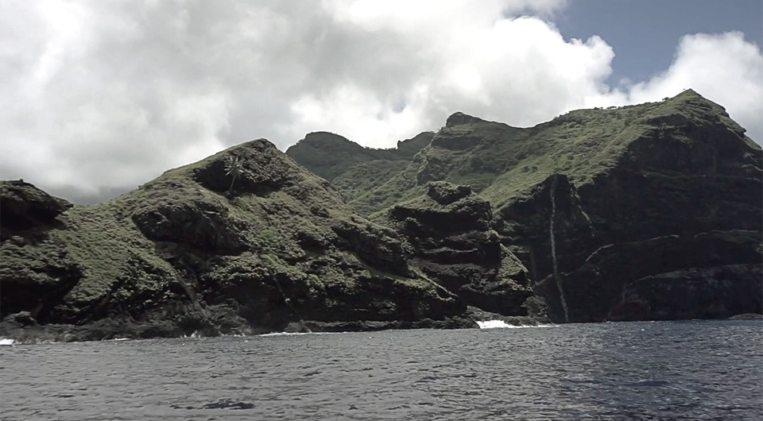
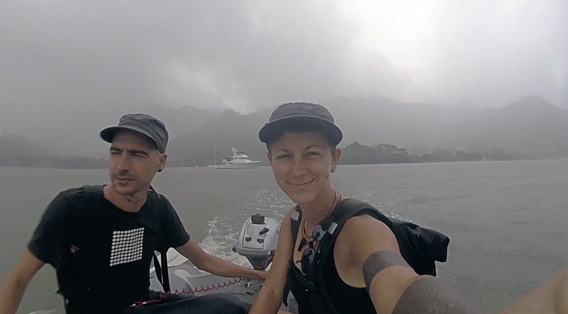
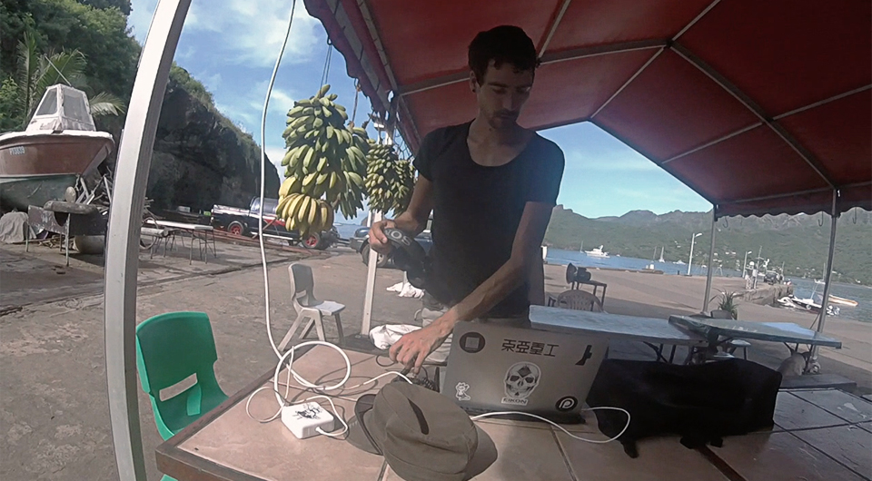
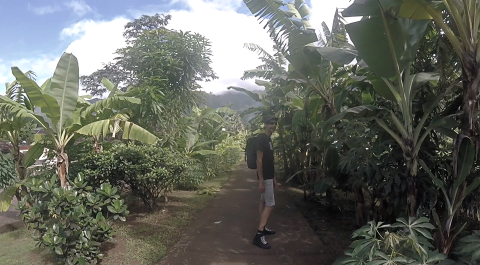
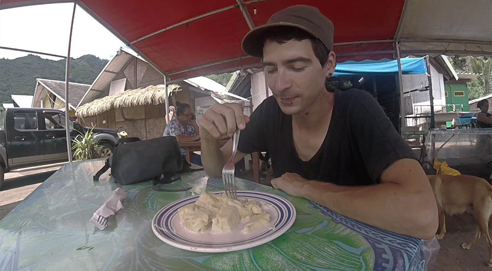
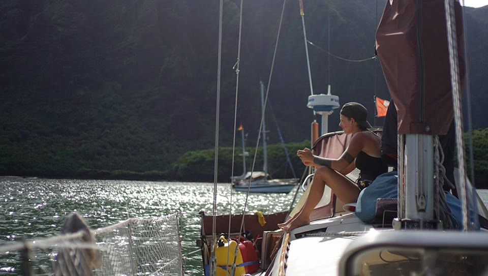
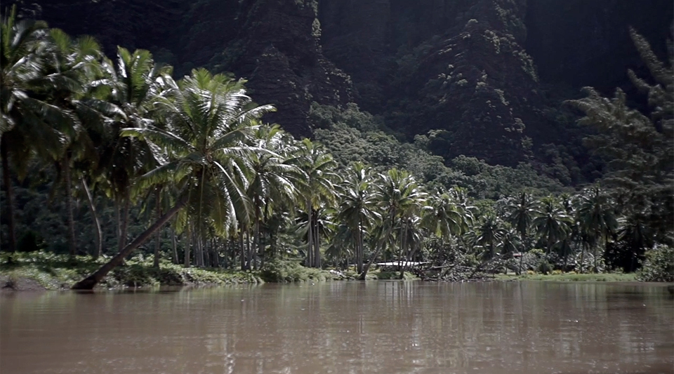

Rainy with a chance of mosquitoes
- Settings
- Nuku hiva in french polynesia
- Our routine
- Polynesian languages
- Tattoos
- Fruits and vegetables
- Dengue fever
- Diesel run
- Daniel's bay
Nuku hiva in french polynesia

Nuku Hiva, a green island in the pacific, straight out of Jurassic Park. Just as foreign and just as wild, except instead of hungry lizards there are hungry, angry mosquitoes.
I had no idea what it was going to be like there, I'd barely read anything about it. I knew where we'd anchor, that people there spoke french and that there would be baguettes, but beyond that it was a blur, a black spot in my mind. I read the book Fourteen during our 28-day transit from La Paz. In this book, the family had sailed to Nuku Hiva, but all in all their experience there was not so good. It wasn't made bad because of the Marquesans, or the island itself, but because of no-no's – little bugs that bite that hide in sand. I took a mental note of this:
"Avoid sand beaches and you will have a great time!"
Pino arrived at the entrance to Taiohae bay. I sat on the bow with Iggy's deflated corpse, I pumped life back into it, while it, seemed to draw the life out of me. I was sweating, a constant stream oozing down my back. We had no dinghy pump. We broke it ages ago. All we had was a jury-rigged contraption using a bike pump, a bike tube and the hose from the old pump. It worked, but it took twice as long to put air into anything.
A super yatch was anchored in the mouth of the bay, its name was 'Ethereal'.
- "How fitting." I thought.
It's as if the yatch was a sign, a warning of the view to come – one, that is definitely ethereal.
A chain of mountains, green and fuzzy, and ahead a bay filled with boats flying flags from all over the world. We found a spot in 12m of water, mud bottom, and dropped anchor. The sky was clear, but clouds clung to the peaks of every mountain. It was a rare thing, we realized afterwards, for the skies to be clear. Most days were grey. While grey often means rain, it also means less sun. It was over 30 degrees every day, so hot that at times we couldn't work, our bodies shiny with sweat, driving us mad. Mad to the point that we seriously considered flooding the cockpit with water to turn it into a pool.
Our routine
Everyday, we'd get up with the sun. The mornings were cooler, but around 10am, when it was too warm in the boat we went ashore to work from the snack bar. Snack Vaeki was an open-air restaurant with seating outside, the kitcken was in a tiny building with a counter. There were with many tables, occupied by locals but most of all by boaters. There was free internet there, but getting something to drink or to eat was encouraged. We would always get the same thing, a freshly squeezed glass of pamplemousse juice. Pamplemousse is nothing like the grapefruit we have in Canada, they're 3 times as big, green inside and out, and sweet-tasting. The seating area was covered with a plastic canopy, euro-style outlets hung on every post, sharing the space with stalks of bananas.
Many animals would hang around the snack bar, dogs lay under the tables, hiding from the sun, but these did little to shield them from the constant onslaught of flies. There were also chickens, lot of chickens and roosters. I thought roosters only crowed in the morning, but no, they crow for no reason, at all hours of the day, endless b'gawking and cluck-clucking. We'd also seen horses walk around, but they didn't care to hang around the pier and much preferred nibbling on bits of tall grass further inland.
We sat at the Snack everyday, catching a bit of internet before everyone else would come ashore to use it. Uploading anything was a challenge. We found an internet lounge in the village, a small building with walls covered in popular (but old) xbox and playstation titles. There were tables, with a few old computers, televisions and consoles. Kids sat playing games, while 3 giant fans helped to cool the place down. The owner was friendly, we got along well enough, so much that he let us leave our laptop there overnight to get a big file online. It took 3 days to upload a 10 minute video, and this is with, apparently, the fastest internet on the island. Many locals would come to the internet place to ask for movies, or series. Even all the way out here, people follow game of thrones, the walking dead, or other popular media.

Even if it was really hot, we didn't swim here. It rained everyday, and the run-off from the mountain made the water brown and unclear. It wasn't inviting. And not just this, the first day when we took the dinghy ashore, we noticed a lot of angry splish-splashing near the concrete pier, then our eyes moved to someone, tossing bits of something pinkish into the water...
Then I saw fins.
And tails.
Sharks. Many sharks.
While I think them wonderful, my monkey brain still fears teeth.
Devine and I gulped. We cared little to swim after that, even after seeing kids leaping off that same pier for a swim a few hours later.
- "We led sheltered lives haven't we?"
Devine said, wide-eyed still.
These kids were fearless. They made a game of it, just like they made a game of swimming where the waves break on the shore. The island doesn't have a reef, so when the tide and wind-driven waves come in, the water races to shore, unhindered, and explodes onto the sea wall with a cloud CLAP! There was no beach there, at low-tide the bottom was just mud and rocks, mostly rocks, polished after years of being caressed by the sea. The waves hitting the wall were considerable, even so, the kids took to the sea! They grabbed street signs, bits of wood, whatever they could find that could be used as a body-board, then they'd sit in the water, waiting for the waves to come. The waves always did come, and buried them all in an instant. The kids laughed, they'd played this game a hundred times.
We were impressed, and again, felt we'd led very sheltered lives.
Polynesian languages
The people in Nuku Hiva are exceptionally nice. Because we could speak french, we had an edge over those who couldn't, it was easier to befriend locals, a lot of them even recognized our accent.
- "You're from Quebec!"
They would say in french.
- "Yea, from Montreal!"
- "I love the the accent!"
- "Poutine. Bobette. Tabarnak."
While the locals speak French, they also speak Marquesan, a language of many vowels. When first seeing it written down, I remembered a song in 'national lampoon's christmas vacation', the scene when Clark imagines a woman on a diveboard, about to dive in his imaginary pool. A song is playing in the background, it goes: "Mele kalikimaka."
It was very similar to the writing I'd seen in the village. I wondered then, is Hawaiian that different from Marquesan? The two sets of islands are so close! After much reading, I found out that both fall under central eastern polynesian, which is sub-divided into Marquesic – encompassing Marquesan AND Hawaiian – and Tahitic. All Polynesian languages show strong similarity, particularly in vocabulary. 'Mele kalikimaka' is Hawaiian, and means 'merry christmas', or at least that's what the song says it means. I learned then, that the only central eastern polynesian words I knew were actually the Hawaiian equivalent of katakana in Japanese. The polynesians had no notion of religion or christmas, that is, until the missionaries arrived. Because the word didn't exist, Hawaiians opted for a phonetic translation of merry christmas instead of making a new word for it.
But now, I was down to knowing no Polynesian at all, Hawaiian or Marquesan, but that changed quickly enough. When walking down the street, people smiled at us and said:
- "La Orana!"
Which we promptly repeated, and which means "Hello!". This word is similar in all central eastern polynesian countries:
French polynesia - La orana! (yo-rah-nah)
Cook islands - Kia orana!
New Zealand - Kia ora!
We did mix these up on occasion, we always counted on the fact that they'd assumed we said the correct thing. In doubt, you could say the words quickly, under your breath, no one would know, or if they did, they were too damn polite to say anything about it.
Tattoos
Marquesans are really keen on tattoos, a lot of people had them, and were very pleased to see ours! A lot of foreigners come here to get tattoos, including an old salt we met, the captain of a 70-foot steel boat. If you asked him about tattoos, he would tell you, in a broken english accent, that he cared little for them. Don't ask me how, but he ended up with some ink on his shoulder, even then, he wasn't too fond of my black-out tattoo.
- "What does it mean?"
He asked me one day.
- "It has no meaning, it's purely aesthetic,"
Then, after realizing that I'd reached the limit of his english, I simplified.
- "It means nothing, I just like it."
He spoke good enough french, but whenever I tried to talk to him his eyes went real small, as if doing this would sharpen his hearing. I always spoke to him in french first, but I'd switch to english afterwards – it's entirely possible that my accent was just too pronounced. He always did understand me in the end. The answer I gave him, about the meaning of my tattoo, in simple english, displeased him, and he began to lecture me on how silly it was to bear something permanent on your person that had no meaning. People love to lecture me about this, and I love to ignore them.
Fruits and vegetables
In the afternoon, after spending the first part of the day at the Snack, we went on walks around the island. The place had fruit trees at every corner, bearing mangos, papayas, sugar apples, coconut, pamplemousse, passion fruit and breadfruit. All of the houses were camouflaged in green, there was plenty to eat on their property. It is why in some places it was hard to find fruit, stores just don't sell them because the locals have no need of them. There was a market near the concrete pier that sold fruit, frequented by those who came on boats, planes or cruiseships. The market sold fresh vegetables too, brought by cargo ships every week. On days when the cargo ships arrived, the stands were full of fresh produce, many of them in high demand and of short supply. If you wanted tomatoes, you had to get up early at 5am to get them. We didn't care to do that. We bought local fruit instead, fresh papaya makes a good substitute for tomatoes in bruschetta. Our staples were eggplant, sweet potato, daikon radish and cabbage.
We soon adopted the local produce too, like breadfruit, there is so much to say about this humble plant. It is a species of the jackfruit family, it has a potato-like flavour, but the more ripe it is the sweeter the taste. Breadfruit is a good medium, and can be made into a number of things, we experimented a lot with this during our stay in the islands. Many of the locals looked at us funny when we asked to buy them.
- "Breadfruit? That's what my grandparents eat."
Not so cool with the youngsters apparently.
Dengue fever
During our walks on the island, we almost always regretted walking so far because of how warm it was. The deeper you walk, the more humid, and the less wind there is, and the more you ooze. A walk to the hardware store, or to the pharmacy, always resulted in us coming back looking like we'd gone for a swim.
It's during one of these walks, that Devine contracted dengue fever. Devine had bad headaches and muscle pains, sleeping was difficult and moving was near impossible at times. We'd read about dengue and knew what it was, plus the symptoms matched up, but we weren't sure and it worried us, and so Devine went to the hospital to get a second opinion. On return, a 300$ bill to be paid in hand, Devine appeared confused.
- "They didn't say I had dengue, but made me take scans, thinking the pains I had were maybe due to scoliosis."
- "What? That makes NO sense."
- "No. It really doesn't."
Devine did have dengue, but the hospital didn't want to diagnose anyone with it. The reason for that was simple, if there is a certain number of reports, they have to declare an epidemic, which can in turn, scare all of the visitors away. Dengue is bad for business, and the polynesians depend on tourism. I understand this, Devine was healthy otherwise and in no real risk, but did wish they hadn't billed us 300$ to cover up the lie.

Everyone in the bay knows when a cruiseship is coming, because the locals make a show of it, dressing in traditional wear and playing music. The cruiseships, the blue whale equivalent of Pino, ferry people back and forth in vessels that resemble little space shuttles, they do this all day, to and fro, morning till evening. The tourists look like tourists, pale, camera or ipad in hand, they'd buy their souvenirs, something authentic, take tours around the island and then return to their ocean castle.
Going to work at the Snack was a bad idea with a cruiseship around, it was crowded with tourists, all trying to skype to their family, a continent or two away, while in the background, chickens comically clucked and b'gawked extra harder – I suspected they knew what they were doing.
Devine did recover from dengue, but days later spotted a good friend who suffered the same. The hospital said the same thing, about it not being dengue, minus the warning about it possibly being scoliosis.
We stayed in Nuku Hiva for a long while, which permitted us to start and complete the production of our book Thousand rooms. It wasn't easy to work on this here, we seriously overerestimated our tolerance to warm weather, but we got it done still! Our open-air office, Snack Vaeki, wasn't such a bad place to work from after all, we had unlimited pamplemousse juice and the company of other sailors.
Diesel run
By the end of the month, we were getting restless, and decided to move to the next bay. Before doing that, we had to get some diesel. Getting diesel was not the easiest, we took our dinghy to another concrete pier at low tide (due to poor planning). Concrete piers don't float up and down but stay right where they are, to our great displeasure, we had a 6-foot ladder to climb to get onto it. I brought a rope, figured we could lower the jerry cans down into the dinghy that way. First, we got all 4 cans up, and tied Iggy to a step in the ladder. We had them filled up at the gas station, just a short walk away.
I stood on the pier while Devine was in the dinghy below, I tied a rope to the handle of the first jerry can and lowered it, while Devine was trying to keep Iggy steady in the waves. We dropped none, operation diesel-pickup was a success.
Daniel's bay
We also had to fill our water, Daniel's bay was just a short sail away and was the best place to do it. The anchorage was beautiful, smaller, with high cliffs on one side, if you looked carefully you could see goats walking on its ridges, we could hear them too, bleating in succession. We asked our neighbour, a german sailor, where to get water. He smiled, and told us that he was going there now.
- "You'll have to follow me very closely, many rocks in the entrance, and current, and waves. Do like me, and you'll be okay."
We followed him into the mouth of the river. There was a lot of current and swell, and the water was shallow, if we weren't careful we'd end up on the rocks for sure. The german guy was ahead of us, proceeding slowly, every now and then he pulled up his outboard, avoiding rocks no doubt. We mirrored his movements.
- "Do like him, yes. He knows. He must know!"
We said to ourselves, nervously, all the while wondering how it is he knew where the rocks were. The water wasn't any clearer here. We preferred not to dwell on this, not because it made us nervous, but because we had to focus on what was happening now. We went past the ugly bit of the river, and arrived into the calm bit, relieved. The river was long and narrow, bordered by many trees, it felt like being on the Amazon. Not that I've been on the Amazon, say, it's my mind's memory of a film about what it was like to be on the Amazon.
The german guy arrived near a grassy shore, and tied the dinghy to a tree. We did the same.
- "Watch your head you two, you die if you get hit in the head by a falling coconut."
We looked up at the top of the tree we had moored onto, and there was, indeed, a lot of them up there, waiting to kill us perhaps, we thought, or maybe they just didn't feel like it today.
There was a tap nearby, just a pipe sticking out of the ground with a faucet at the end of it. It didn't belong there at all. It looked like an anomaly, a glitch in the matrix.
- "Water is very clean, very good. Best water in french polynesia!"
The german guy said. Soon, a Marquesan named Paul joined us, a jolly and friendly-looking fellow. Our guide and he knew each other, in fact, the german guy gave him a hinano beer, which they cracked opened in front of us. Paul explained that the water came from the mountain, and as the german guy had said, many times already, it was very good and very clean.
- "You sell fruit here?" We then asked.
- "Yes, yes! Oh! I like your tattoos! Come, I'll introduce you to my uncle, he likes tattoos too!"
He also said he'd take us to pick some fruit, all from trees on his property, which was the queen's land – or something along those lines. We walked up to an old house, with skulls attached to the wood beams, and other trinkets hanging about. This was his uncle's house. The first thing we saw upon entering, was a kitten on a leash.
- "Uncle?"
But Uncle turned out to be human after all – how boring.
Paul appeared older than Uncle, we wondered then if we'd misunderstood something, we never did find out. Uncle had long black hair, tied into a high bun, and of course, he had tattoos. He shook our hand, but didn't say much, in fact, the cat had meowed more than he'd spoken.

Now both began to walk around the property, picking fruits for us. Uncle climbed up a tree, while Paul used a long stick to pick off mangos. In the end, we had about 10 pamplemousses, 2 papayas, 6 mangos, 3 soursops and 1 giant stalk of bananas. I looked at the stalk of bananas, trying to imagine how many banana breads I'd have to make once they'd all decide to ripen at the same time, because that's what bananas do, they synchronize, they enjoy the look of terror on our faces as their skin gets spottier, and darker with every passing day.
Iggy was very full then, with much water and fruit, we were ready for our transit to the Tuamotus. We had to ride in the ugly part of the river again to get to Pino, without our german guide this time. We managed well enough, our eyes widening with every coming swell. What a shame it would be, if all of these fruits fell into the deep.
Our time in Nuku Hiva was at an end, but other islands and challenges lay ahead.
Watch a video of our time in Nuku Hiva.